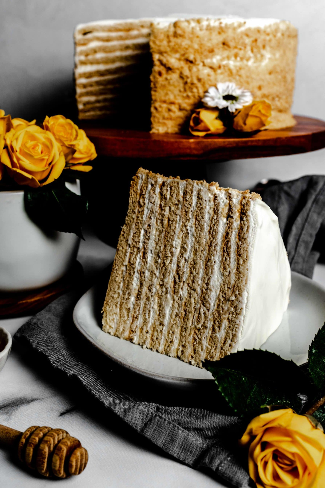

Medovik

Medovik (медовик) is a delicious layer honey cake from Russia. Once you've tasted it once you'll want to eat it again and again!
This recipe will need about 45 minutes for prep time, 45 minutes for baking, and a minimum of 8 hours of refrigeration. It yields 1 9-inch cake.
Ingredients
For the Burnt Honey:
- 3/4 cup wildflower honey
- 3 tablespoons cold water
For the Cake Layers:
- 14 tablespoons unsalted butter, cut into slices
- 1 cup white sugar
- 3/4 cup wildflower honey
- 6 large cold eggs
- 2 1/2 teaspoons baking soda
- 3/4 teaspoon fine salt
- 1 teaspoon ground cinnamon
- 3 3/4 cups all-purpose flour
For the Frosting:
- 4 cups cold heavy whipping cream
- 3/4 cup sour cream
Steps
- Pour honey into a deep saucepan over medium heat. Boil until a shade darker and caramel-like in aroma, about 10 minutes. Turn off heat and whisk in cold water.
- Preheat the oven to 375 degrees F (190 degrees C). Line a baking sheet with a silicone mat (such as Silpat®). Place a mixing bowl and a whisk in the refrigerator.
- Place a large metal bowl over the lowest heat setting on the stovetop. Add butter, sugar, 1/4 cup of the burnt honey, and regular wildflower honey. Let sit until butter melts, 5 to 7 minutes.
- Meanwhile, combine baking soda, salt, and cinnamon in a small bowl.
- Whisk butter mixture and let sit until very warm to the touch. Whisk in eggs. Keep mixture over low heat until it gets very warm again; whisk in baking soda mixture. Remove from heat. Sift in flour in 2 or 3 additions, stirring well after each, until batter is easily spreadable.
- Transfer about 1/2 cup batter onto the prepared baking sheet. Spread into an 8- or 9-inch circle using an offset spatula. Shake and tap the pan to knock out any air bubbles.
- Bake in the preheated oven until lightly browned, 6 to 7 minutes. Remove liner from the pan and let cake layer continue cooling until firm enough to remove, 6 to 7 minutes. Invert cake onto a round of parchment paper.
- Repeat until you have a total of 8 cake layers, letting each cool on an individual parchment round. Trim edges using a pizza wheel to ensure they are the same size; save scraps for crumb mixture.
- Spread remaining batter onto the lined baking sheet. Bake in the preheated oven until edges are dry, about 10 minutes. Remove from the oven and cut into small pieces; toss with reserved cake scraps.
- Return to the oven and continue to bake until browned, 7 to 10 minutes more. Let cool completely, 15 to 20 minutes. Transfer to a resealable bag and beat into fairly fine crumbs using a rolling pin. Set aside.
- Remove the bowl and whisk from the refrigerator. Pour in heavy cream. Whisk until soft peaks form. Add remaining burnt honey and sour cream; continue whisking until stiff peaks form.
- Place a cake layer on a parchment paper round on top of a pizza pan or serving plate. Spread a cup of frosting evenly on top, almost to the edge. Repeat with cake layers and frosting, pressing the layers in smooth-side down. Place last cake layer smooth-side up. Frost the top and sides of the cake. Cover with crumbs; clean any excess crumbs around base.
- Cover with plastic wrap and refrigerate at least 8 hours, to overnight. Transfer to a cake stand using 2 spatulas. Cut and serve.